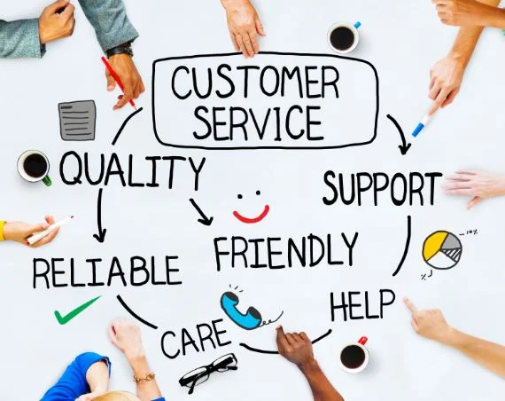

Web Design
I have a passion for front-end web design, combining creativity and technical skills to build user-friendly and visually appealing websites. My expertise lies in HTML, CSS, and JavaScript, allowing me to craft responsive and accessible designs that enhance user experience.
Through my experience, I’ve worked on projects that required a keen eye for detail and a deep understanding of UI/UX principles. I focus on creating clean layouts, intuitive navigation, and interactive elements that engage users effectively.
Additionally, my skills in data manipulation and technical support enable me to optimize websites for both performance and functionality.
I’m continuously exploring the latest trends and best practices in web design to ensure that my projects are not only aesthetically pleasing but also aligned with modern web standards.

Customer Service
I pride myself on delivering exceptional customer service by combining strong communication skills with a detail-oriented approach. My experience in roles that involved technical support and IT maintenance has equipped me with the ability to handle customer inquiries efficiently, troubleshoot issues, and provide clear solutions.
I am skilled in using CRM software to manage customer interactions, ensuring that every concern is addressed promptly and professionally. My ability to listen actively, empathize, and resolve problems has consistently contributed to positive customer experiences and high satisfaction rates.
I believe that great customer service is about building relationships and ensuring that every interaction leaves a positive impression. I’m committed to continuously refining my skills to exceed customer expectations and support organizational goals.
If you’re looking for someone who can blend technical expertise with outstanding customer care, let’s connect!
